Ok. okokokok. After I really didn't like Twinsanity or Tag Team, I had high hopes for enjoying this game. And after 100%-ing it, I'd call it... Good. Maybe even pretty good. Much better than Tag Team, and even Twinsanity I'd say, but not without it's flaws. I'll elaborate.
The shellephant in the room here is it's gameplay style. Put simply, it's gameplay is almost completely divorced from any of the previous crash games. I guess Twinsanity already kind of started that path, but Titans fully does away with even crash's baisic moveset. Do I have a problem with this? Not really. I'm not attached to any particular gameplay style, I think as long as it's fun, they can do what they like. So is it fun then? Yeah, I think so. Crash feels good to control, the baisic light and heavy attacks are good, the surfing move always feels good and the spin (when you get it) feels ok too.
That, then, brings us to the titular tians. Most of the time, taking down a titan so that you can mow down a group of minions, tackle a horde of similar tians or work your way up to a larger titan feels good. Each one, while usually having pretty similar moves, fees different enough that they usually feel unique and interesting. That loop sort of falls apart a little when they splash three or four of the same titans into one arena, and you can't get a hit off on any of them without getting shredded. It doesn't feel difficult in a challenging way, it feels difficult in a tedious way. Once you get a hold of one though, controlling the titans is a lot of fun. Learning all of their special moves and figuring out exactly when the right time is to let them loose feels really good.
The strongest aspect of the game, I think, ends up being it's visual and audio presentation. Not only is it completely different from it's predecessors in a gameplay sense, it also invents an entirely new visual asthetic for itself, which I'd say is the most intersting thing about it. While I'm certinately not qualified to speak to the cultral implications of aping concepts like tribal tatoos, voodoo, mojo, etc for your crash bandicoot game, I can say it it at least turned into an interesting end product. That aside, the general environment design was a huge step up from pretty much all of the crash games on ps2 thus far, save for maybe Nitro Kart. The environments weren't too interesting gameplay-wise, but they sure did look nice.
One last thing that I can't not mention in relation to the visuals, I absolutely love how they gave most of the titans color variants that spawn at random. It's such a small 'they didn't have to do that' kind of thing, but it does a lot when you're facing a giant horde of them. I vividly remember always trying to pick the white and purple Spikes over all the other ones when playing the game as a child.\
To summarize, I'd call it an 'ok' game that's been elevated by some great game feel.
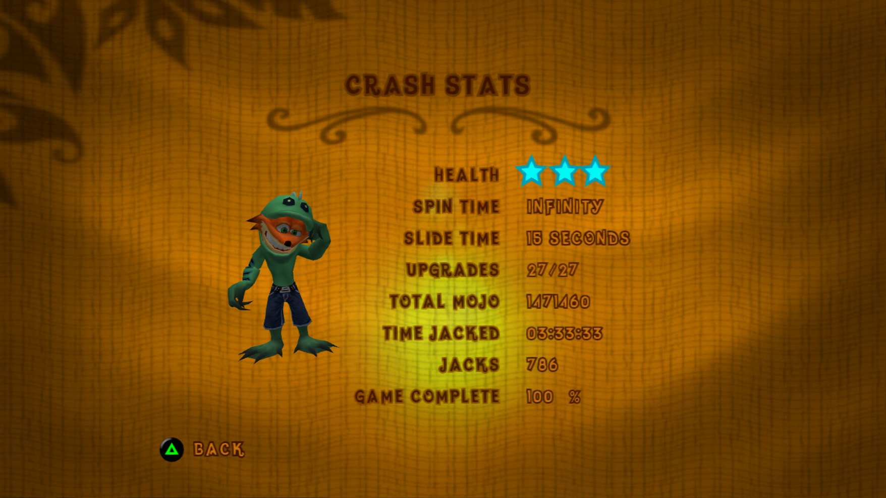
Yeah this one sucks as well. My emulation software says it only took me 4 hours to beat this game, and I think I enjoyed maybe a quarter of that time, maximum. I can't say I didn't find simple joy in joining onto the first place car and demolishing everything in the vicinity with Nina's shotgun blast and the frequently spawning giant cow / submarine / piano weapons. Unfortunately, however, this game decided to have a platforming hub world, where all the levels are housed. The hub world manages to feel boring, and unchallenging, and finnicky at the same time, all while running at a headache-inducing 10fps.
While playing this game and the previous, I'd started to look forward to playing Crash of the Titans again. I know most people don't like it, but it has to be a step up from these garbage piles right? I hope so. I'd thought CotT didn't use much from it's predecessors, but it turns out his noises (and some of his animations?) were originally recorded for Tag Team.
(side note, I knew I recognised one of the chicken voices from somewhere, turns out they put Quinton Flynn in there. He's basically just doing the same voice as Axel too.)
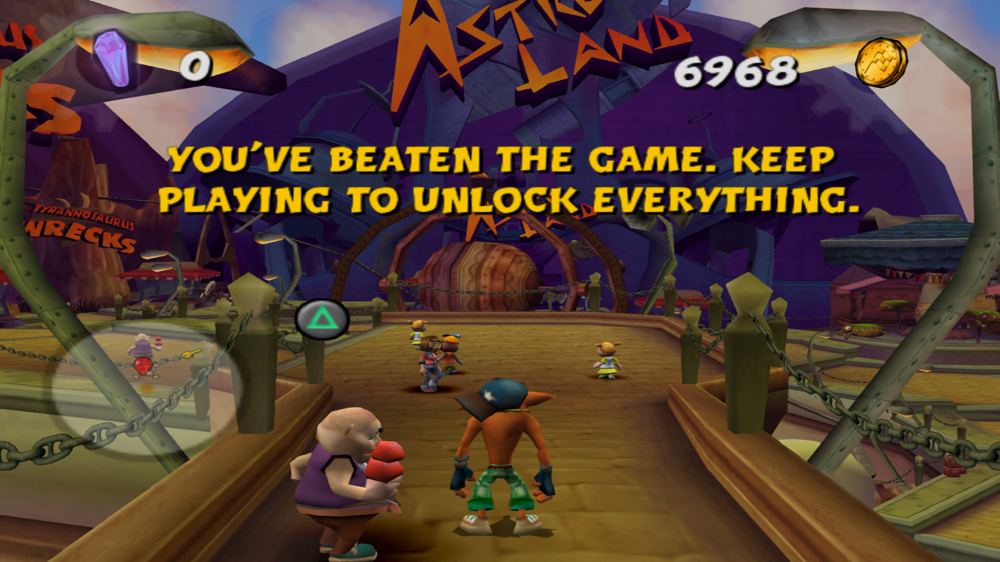
(I will not keep playing to unlock everything.)
I'm not someone who usually watches horror movies. But I have to say, this movie was extremely well made. The writing and pacing were great, the visual effects were great, and the sound & music design was a real stand out. It also scared me out of my goddamn gourd.
(Click to reveal)
Oh, I probably shouldn't be recapping all of this at midnight in bed... I've never had any horror things stick with me enough to appear in my nightmares... we'll see if this turns out different.
I'd never beaten this game before now. Only played the first level or two and then put it down. I have to say... this game is bad. There are speckles of good ideas here and there, but it mostly feels underbaked (which, I have since discovered, has been well documented online). It gets some points for it's super out there tone and odd humor (though there isn't much of it, all things considered) and it's introducing of Nina Cortex, though she only gets one speaking line. The biggest standout has to eb the soundtrack. I can't say I know any other games that use acapella as a soundtrack instrument, let alone the whole thing. Some of the songs are a little grating (N-Gin's battleship) but the rest range from ok to pretty good. Cavern Catastrophe is a standout for me.
That's kind of it for the positives though. the controls are a lot clunkier than every previous entry in the series, and they're quite unfit for the larger open environments that litter this game. They decided to (mostly) ditch the classic mainline crash level-based structure in favor of interconnected levels in a larger """seamless""" hub world. This also necessitated the removal of the typical colored and clear gems, so each stage was given six colored gems each, which you collect by finding their hiding spots or solving puzzles. So many of the puzzles are tedious. There's painful physics ball rolling and really finnicky cannon shooting. Overall I didn't like the experience of 100%ing this game at all. I didn't plan on it, but I recently found myself with a livestream to watch and nothing better to do, so...
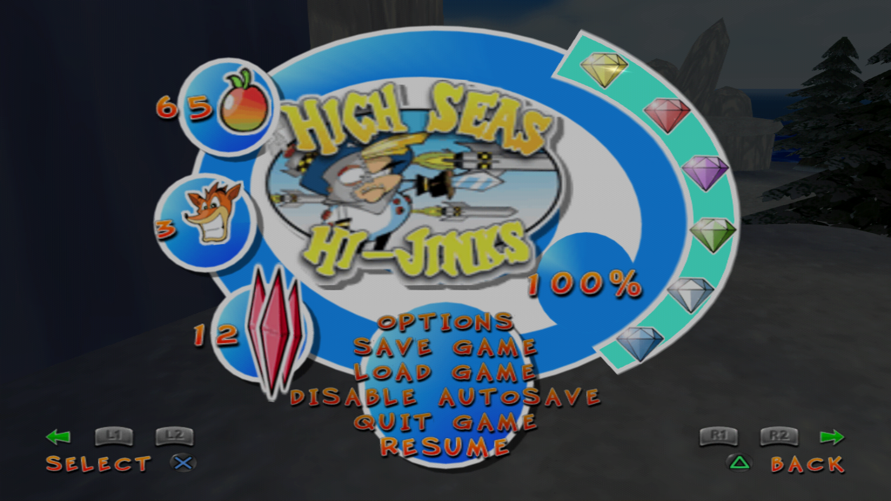
Probably of my more nostalgiaful games on this list. I have to say, it fared better than I expected on replay! I feel fans online feel somewhat lukewarm about it, citing it's controls feeling worse than it's predecessor, but I don't think it's very noticeable (save some spots on the anti-gravity sections feeling funny).
The things that stood out to me about this game tended to be more visual and.. experiential? I'm not how much of it is rose tinted goggles but I really really love this game's world / environment design. They use a lot of bright yellows and golds and combine them with neon greens and purples in ways that I like, and a couple of the tracks (inferno island and meteor gorge) have a nice deep blue to red contrast going on. I also kind of like the FMV cutscenes? They're probably best described as 'cheesy', but it goes a long way I feel to give a sense of story that most of the other games didn't really have.
Character choices are also inspired. Glad they decided to bring Crunch in as a 'main player' beside crash and coco, I feel like he fits really well. Also love the choice to bring N-Trance in, I don't think I really understood the whole 'N-Trance hypnotizes Dingo, Polar and Purah' bit when I was younger, but I think it's just cool that he's here.
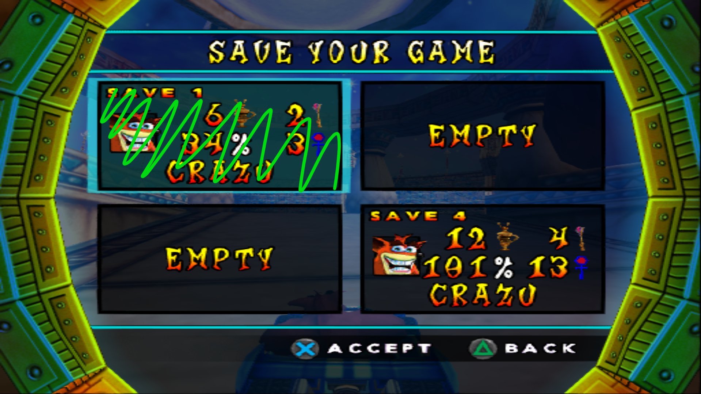
Fantastic. Been so excited to hear the full album, considering just how many times I've replayed Honeycrisp and The Sim.
I've only listened to the full thing once so far, but my favorite songs are Big On The Internet and Angels in the Static Snow.
So what's next for this website? I feel like I want to do more with it, but... In the past that's always meant tearing the entire site down and starting again, and I don't want to do that yet! I've only just finished building it after all, and I really like it!
Regardless, I'd like to keep trying to expand my webmaking skillset. It's harder to make the knowledge stick when I'm only doing it for about one month a year..
I'm not sure what I'd like to do. I guess the next step would be to make something interactable? Like a game? oohh that would be hard...
> Click to Reveal Ramble <
It's May 3rd as I write this little ramble addition! I wanted to get back into the swing of coding things in ways that make sense, so I made this little function to reveal text in a fun way. I'm not sure what else I could use this for. (I'd use it to reveal spoilers, but I want to put images in those, and I don't think my little system can handle that
Unless it can? Ok I'm going to paste an image here and see if it works...
.
.
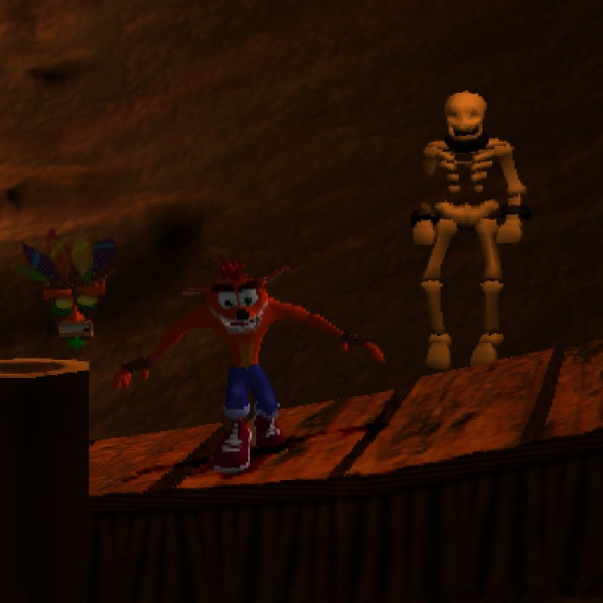
No.
This game is one million per cent my jam. pun not intended? It's been recommended many times by people I follow on tumblr, so I had a pretty good idea that it'd be good (which only increased since listening to Jam's other work).
I played the demo a wee bit ago, and it didn't captivate me as much? Playing the full game made it clear that that was pretty much just a demo issue (it kind of drops you in and doesn't explain much).
The full game is amazing though. Beautiful. Spectacular music, and an engaging story I definitely didn't expect.
(Click to reveal)
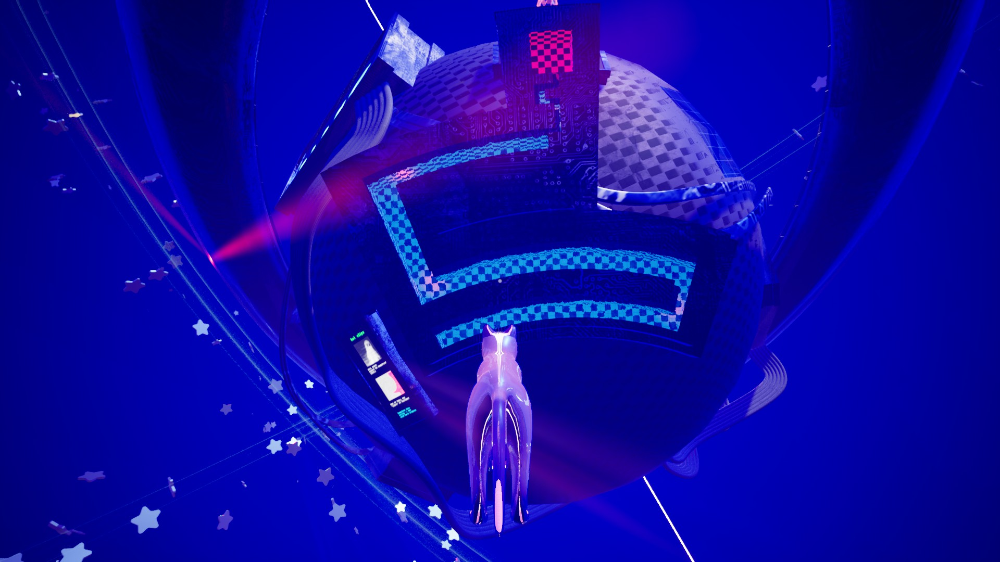
(yes, there was a jumpscare at the end of the maze.) Amazing payoff.
I.. Didn't know what to expect playing this game. My only entry points were "visual novel, girl goes missing in russian town, small chance of yuri". I'm glad I played it.
I've never been very good at gleaning deeper meaning behind works. At reaching beyond the words on the page and pulling out deeper themes. But here, in this space where things didn't quite make sense.. I could see some of myself in Asya. When she tries her best to see good and beauty in everyone and everything. When she rationalizes the will of the universe, personifies it, seeking to understand it's will. When she remarks that so much of her memories, of things that happened before right now, has been lost to a black void. But she keeps on going anyways.
The Crash GBA Duology! I haven't given these a proper playthrough before, and I'm kind of glad I did. They're interesting. For a porting of the 'crash formula' onto a 2d handheld, I'd say they did about as good as they could have.
Sort of mirroring the original PS1 games, the first is the more clunky one. Mainly owing to the smaller screen size making some jumps harder than needed, especially when the camera doesn't quite do what you want it to. For the most part, it does feel very much like a crash game.
The level gimmicks range from okay to not fun. The blimp piloting levels are alright, the underwater levels are just as middling as they are in the other entries in the series, and the polar bear rides make me want to dematerialize (especially when you're going for a time trial). The secret hoverbike level was a cool standout, though.
I ended up 101%ing this game, if only to play the Megamix fight at the end. Which, I have to say, is a very strange addition. I appreciate that they make the '100% special ending' mechanically unique, and going all in with a werid guy is pretty cool.
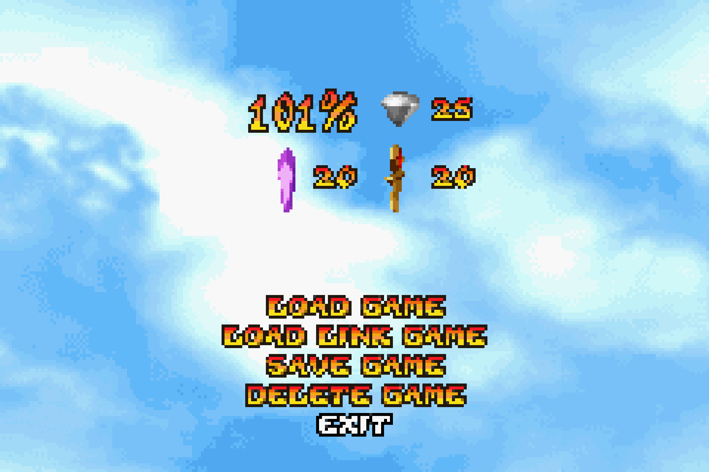
The second game, I think, is am improvement pretty much everywhere. The music is better, the cutscenes get little animations, and you have the double jump unlocked from the start to help with some of the weirder jumps. I also like the decision to make the levels shorter overall, and increase the number of levels to compensate. Helps with the flow I think, and means the gimmick levels can take up less room.
On the subject of gimmick levels.. They're mostly better across the board! The wakeboard is the only one I dislike really. The rocket tug is interesting if a little frustrating, and the atlasphere really stands out here, even compared to it's showing in wrath of cortex. It manages to feel much better here despite the GBA, mostly thanks to the addition of a brake button.
The tone of this game also shifts in comparison to the previous one (and most of the series, kind of). It's really silly in a way I love. I like N-Trance even though he looks stupid (affectionate), and I also like that they make Fake Crash plot relevant for some reason.
I didn't end up 100%ing this game, if only because doing a whole new round of time trial levels so soon after the first game would not have been enjoyable. I did get all of the gem shards (another feature I'm a fan of) so that I could fight the terrible final N-Tropy boss, but the ending was worth it.
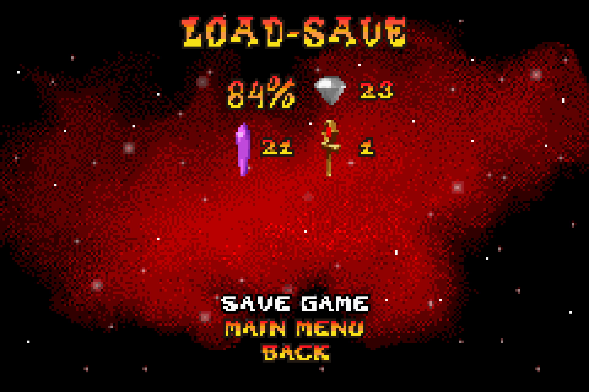
All in all, I'm kind of sad they never made a third game. I would've liked to see what interesting things they could've come up with.
As of writing, I just finished the last episode of the first season, and.. I think this is one of my favorite shows ever made? It's kind of perfect. The characters have the perfect balance of chemistry and tension, and the story knows exactly when and how to shake things up.
It manages to keep it's central cooking theme while also being a dramatic story while also having a lot more very exciting and well animated action.
A couple specific things I liked (and this may veer into spoiler territory):
- I love how Mariclle changed her hair so often.
- I love how small worldbuilding details kept getting added on to flesh out little things like economy and dungeon ecosystem.
- I like how we learn where they poop in the dungeon
- I love that, at the exact point that you think they've done all they can with the different ways in which you can eat monsters, they add in a new character to shake things up.
- I love how they add her into the OP.
I'm sitting these next to Honeycrisp and The Sim from earlier this year on my "Pair of Teto songs I found on tumblr that go hard" shelf.
These songs perfectly capture an unnerving atmosphere fitting of their subject matter (the music video for Doomer is so good)
Oh right, Slay The Spire II! It's been a couple weeks (ish) since release and I haven't really had much to say about it. It's slay the spire, and it's great. Lacking a little polish and 'juice' right now, but that's what early access is for, and they've already proven that they're going to be shining it up before 1.0.
(right now, I love the necrobinder and I less love the Regent. sorry buddy, you're hard to play.)
It didn't dawn on me that '100%ing all the crash games' included Wrath of Cortex until I was almost done with CTR. I wasn't exactly looking forward to it, but I was interested to examine the game slightly more critically. And I have to say, after completion... this game is kind of nothing. It's format is so completely a copy paste of Crash 3 that it probably could've come out on the ps1.
There are a few new ideas here; conceptually some of the level themes are very cool (Burning volcano island strewn with lab parts, Underwater level that transforms into a research center) and the idea of having a level that transforms between gimmick stage and normal stage is a neat evolution on the original games. The music is also worth talking about, some of the tracks are kind of garbage but some of them I really like.
Beyond those things, it's all kind of meh. The levels range from extremely short to excruciatingly long, the game doesn't look particularly nice, and most gameplay modes control very badly. Regular platforming feels sticky, and the vehicles range from stiff and clunky (the stupid mech suit) to borderline uncontrollable (the jeep).
The 100% experience was less difficult than previous games and more.. tedious (It didn't help that my emulator kept crashing). Platforming stages were mostly fun to time trial through, but the underwater levels specifically gave me some trouble. Surprisingly, I ended up with a lot of platinum relics. like, more platinums than golds. Maybe that's because I ended up doing a little bit of save state abuse to make it go by quicker, who could say...
Conclusion: Glad I'm done with this game. Technically the next ones in the sequence are the GBA games, and I don't know if I'll enjoy those enough to bother 100%ing them? Maybe not to get all the relics at least.
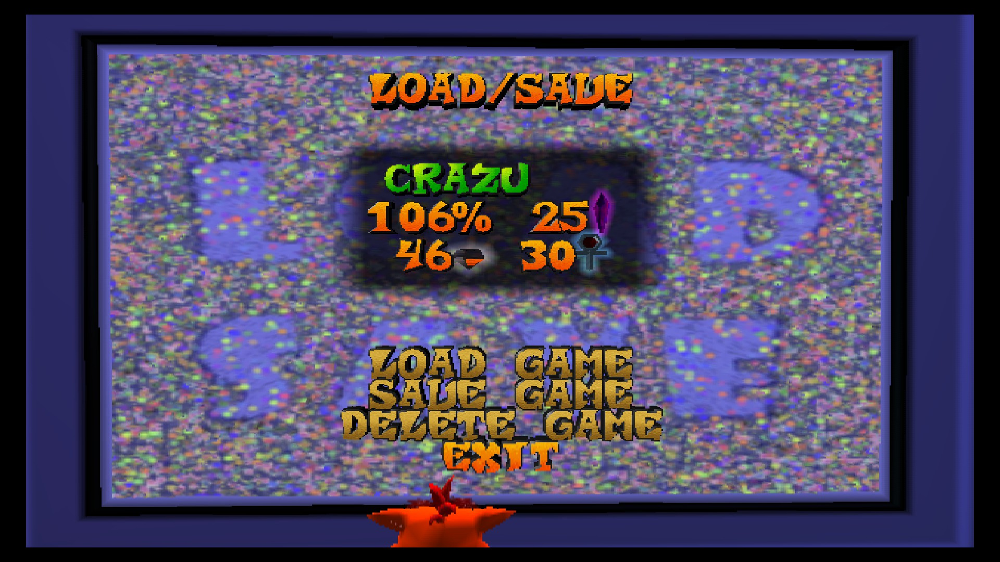
I got to be around when a new Gorillaz album releases! And I have to say, I love this album. (this is not a surprise, I don't think there's a single Gorillaz album I don't love). Of particular note is the animated short they released along with the album.. It's all peak.
I got to go ot a sort-of release event for the album at a local music store! They mostly just played the album in the background while we bought stuff in the store, they couldn't give us the CDs until the next day, and the 'exclusive posters' they gave out were really low quality prints of the cover, but it was fun.
These songs are so good. Jam seems like a multitalentend wizard to me, able to produce awesome 3d visual effects and great music???
Damn this game is good. 100%-ing this might have been more fun than crash 3? Maybe? The time trials are definitely better (and kind of much easier? Especially the on the later tracks I was getting gold relics easily. I even scored the platinum on the two secret tracks first try without much effort). Learning fluid kart movement was super satisfying.
It's very clear that this was meant to be the final game in the series. There's a cute little 'where are they now' at the end, and there's even a video scrapbook from naughty dog. It was adorable.
P.S. I picked N.Gin because he is the best. I do not know why.
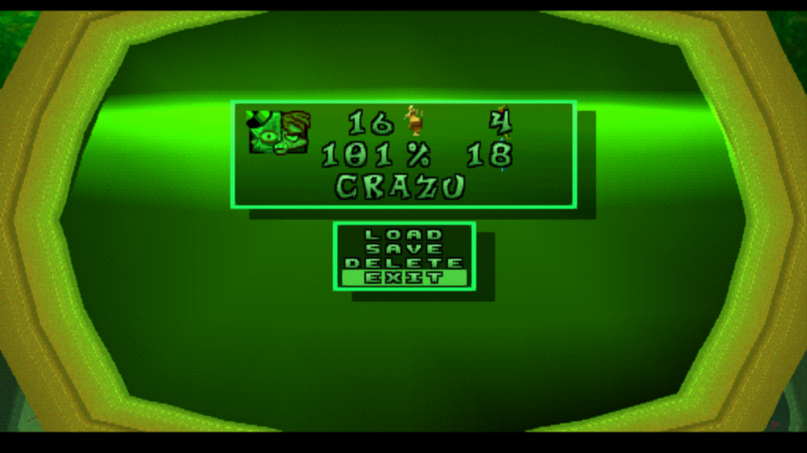
Another pickup from Bandcamp Friday, this one was on the bandcamp reccomendations of Rina Ryukami. It's a style I don't often listen to, the kind of indie / alt rock / .. I don't know, I'm bad with genres. I do know that this album goes hard though.
Ok so I didn't play this one for the first time this year (I've been playing it since 2023, even earlier maybe) but I've put a lot of time in recently, and... I think it might be one of my favorite games of all time?
Everything about it is almost perfect, there's barely anything I would change. The movement and gunplay feels snappy, quick to respond and crunchily sound-designed. The enemies are similarly well designed, both in their sounds and in their distinct visual and functional identities. The character customization allows for a lot of self-expression both cosmecitally and mechanically, with all of the different weapon and upgrade options. It's also seamlessly designed to make cooperation fun and rewarding without feeling like you're bogged down if you get a bad teammate. It even manages to do a seasonal model well, all of it's season content is re-playable by choice and cosmetic only.
I can't wait for Rouge Core, Deep Rock's sister game, to come out (early access this year ghost ship?)
It was bandcamp friday recently, which means it's time to buy some new music!
Cardiac counterpoint was an obvious pickup, being that Constant Companions was my favorite album of last year. And while this CC doesn't hit as completely hard, It still contains bangers within. I was already familiar with BUTCHER VANITY through a fantastic Rhythm Doctor custom level, but the rest were new to me. Or so I thought, hearing "When Spring Comes" is basically a prototype BIRDBRAIN? Interesting. My other favorite tracks are "rawdog" and "Paparazzi Murder Party (ROUNDTABLE REPRISE)"
Taiga, on the other hand, I picked up because Kubbi's Ember is a particular favorite of mine. I like to put it on when I'm feeling.. individualistic. Particularly linked to minecraft (I think since I heard it on a Philza video? back before he went mega big), but since that's not happening right now I listened to Taiga while playing some Vintage Story. It's very similar to Ember vibe-wise, a little more chill which is pretty much exactly what I was looking for. Kind of sad that there are only two full Kubbi albums.
I wrote earlier in the crash 2 entry that I could probably 100% complete this game in one sitting if I wanted to. Having now done that, I realise that that was not true. This took way longer than expected, mainly due to the amount of time it takes to get all of the gold relics.
I was originally playing this on my psp. It was kind of nice having it portable, the quality was pretty good. The PSP then decided to break on me halfway through the time trial relics in the third warp room, so I spent a while unsucessfully trying to import my save before replaying the whole game up to that point. (playing in wide screen on a larger screen with a proper controller was worth it. also I used save states and speedup to quickly restart time trials, don't tell anyone)
Overall, I still think this game is my favorite of the original three games, and I'm looking forward to playing CTR next.
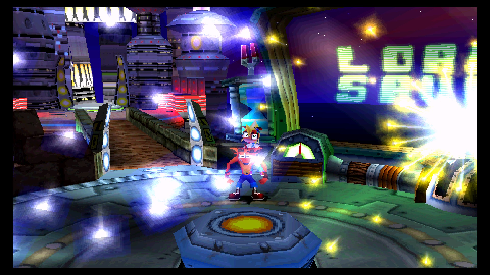
This game & it's sequel are kind of like comfort games to me. I usually end up completing one or two of them a year, just for fun (in fact, I could probably 100% Crash 3 in one sitting, and enjoy my time too). I wanted to 100% this game on it's original non-remake version because I wasn't sure I'd done it before, and it turns out I was right. I knew about most of the secrets in this game (the stack of nitros in Bee-Having, jumping into the pit in Un-Bearable), but I had no idea about the other secret exit in Un-Bearable that takes you into Totally Bear. So this might be the first time I've truly 100% completed this game.
Turns out some of those leves were annoyingly hard (looks at Cold Hard Crash and it shuns my gaze).
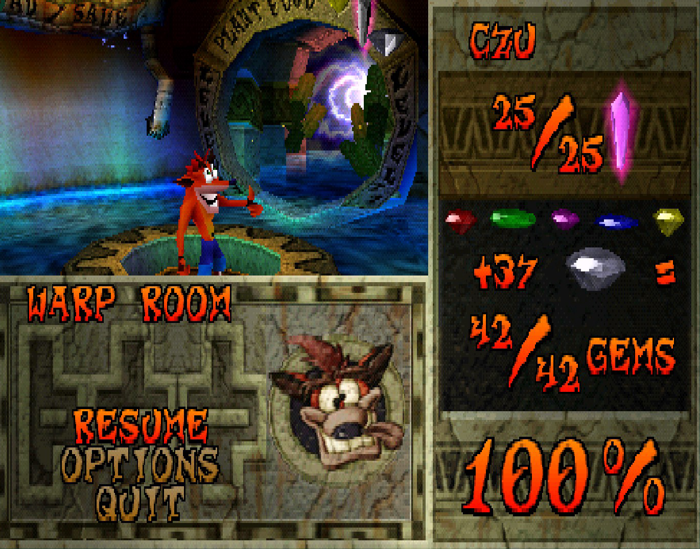
This game is... really fun. And shockingly well built, for what seems like a team of six people! The guns feel nice, the spells feel very flashy and satisfying, the upgrades are fun to use to make builds with.. Like deep rock galactic, sea of theives, and a wizard cowboy had a baby. This game rules. Can't wait for it to properly come out.
An awesome album I stumbled upon (looking at Een Glish's discography). The sounds are slick, and I also really love the visual design and individual album covers for each song (!!! more albums do this pls).
Favorite songs: Poptimisim, 4U2C, Groove or Get Out